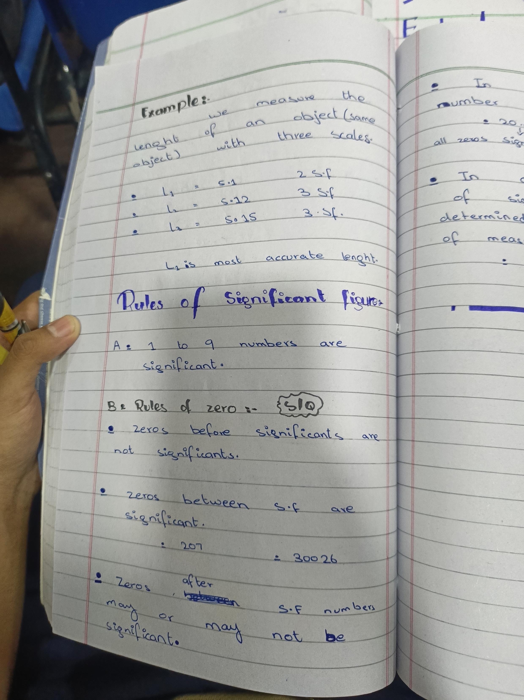

CHAPTER NO 01
Sig Fig Accuracy Example · Rules of Significant Figures
EXAMPLE
we measure the length of an object (same object) with three scales.
l₁ = 5.1 2 S.f
l₂ = 5.12 3 Sf
l₃ = 5.15 3. Sf.
L₃ is most accurate lenght.
Board Exam Spelling Check:
• "lenght" → length
• Note on Precision vs Accuracy: A scale reading to
more decimal places (more significant figures) provides higher
precision and lower fractional uncertainty, making the measurement
more accurate.
Rules of Significant figures
A: 1 to 9 numbers are significant.
B: Rules of zero :-
S/Q
- zeros before significants are not significants.
-
zeros between s.f are significant.
- Zeros after S.F numbers may or may not be significant.
Board Exam Phrasing Check:
• "significants" → significant figures
• Leading Zeros: Zeros to the left of the first
non-zero digit are never significant (e.g.,
0.0025 has 2 sig figs).
• Trapped Zeros: Zeros between non-zero digits are
always significant.
• Trailing Zeros: Zeros after non-zero digits in a
decimal fraction are significant (e.g., 2.50 has 3
sig figs). In integers without decimals (e.g., 8000 kg),
it depends on instrument precision (least count).
Original Notebook Page 14

Add page14.jpg next to this HTML file
Pinch to zoom · Original notebook proof